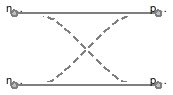

Table of Contents
- User's Guide
- Blocks
- Conditions
- Assemblies
- Regions
- Subregions
- Connectors
- Characteristics
- Units
- Quantities
- BaseClasses
Download
- Latest: FCSys-2.0.zip (**Please check back soon or contact kdavies4 at gmail.com.)

The Chemical, ChemicalBus, Inert, InertAmagat, InertDalton, Face, and FaceBus packages contain models to specify conditions on the connectors with the same names (ChemicalInput or ChemicalOutput, Inert or InertInternal, InertAmagat, InertDalton, Face, and FaceBus). The FacePair and FaceBusPair packages contain models for pairs of Face and FaceBus connectors. Each model is given the same name as the model from the Subregions package that it may be used to represent. For example, the model to interface with the Face connector is named Species (in the Conditions.Face package).
Extends from Modelica.Icons.Package (Icon for standard packages).
| Name | Description |
|---|---|
| Examples | Examples |
| Adapters to Package Modelica | |
| TestStands | Test stands |
| Conditions for the ChemicalBus connector | |
| Conditions for a ChemicalInput connector | |
| Conditions for a Inert or InertInternal connector | |
| Conditions for a InertAmagat connector | |
| Conditions for a InertDalton connector | |
| Conditions for a FaceBus connector (e.g., as in a Region or Subregion model) | |
| Conditions for a Face connector (e.g., as in a Species model) | |
| Conditions for a FaceBus connector (e.g., as in a Region or Subregion model) | |
| Conditions for a pair of Face connectors (e.g., as in a Species model) | |
| Connect two pairs of faces to pass through or cross over | |
| Environment | Environmental properties for a model |
| Base classes (not generally for direct use) |

This model acts as a connection switch.
It has a single parameter, crossOver.
If crossOver is
set to false, then
the router will be in the pass-through mode. In that case,
negative1 is connected to positive1 and negative2
is connected to positive2, as shown by Figure 1a.
If crossOver is set to true, then the router will be in cross-over mode. In that case, negative1 is connected to positive2
and negative2 is
connected to positive1, as shown by Figure 1b.

a: Pass-through |

b: Cross-over |
| Figure 1: Modes of connection. | |
Extends from FCSys.BaseClasses.Icons.Names.Top3.
| Type | Name | Default | Description |
|---|---|---|---|
| Boolean | crossOver | false | Cross over (otherwise, pass through) |
| Type | Name | Description |
|---|---|---|
| FaceBus | negative1 | Negative face 1 |
| FaceBus | positive1 | Positive face 1 |
| FaceBus | negative2 | Negative face 2 |
| FaceBus | positive2 | Positive face 2 |
model Router "Connect two pairs of faces to pass through or cross over" extends FCSys.BaseClasses.Icons.Names.Top3; parameter Boolean crossOver=false "Cross over (otherwise, pass through)"; Connectors.FaceBus negative1 "Negative face 1"; Connectors.FaceBus positive1 "Positive face 1"; Connectors.FaceBus negative2 "Negative face 2"; Connectors.FaceBus positive2 "Positive face 2"; equation if crossOver then connect(negative1, positive2); connect(negative2, positive1); else // Pass-through connect(negative1, positive1); connect(negative2, positive2); end if; end Router;
| Type | Name | Default | Description |
|---|---|---|---|
| Boolean | analysis | true | Include optional variables for analysis |
| PressureAbsolute | p | 1*U.atm | Pressure [m/(l.T2)] |
| TemperatureAbsolute | T | 298.15*U.K | Temperature [l2.m/(N.T2)] |
| NumberAbsolute | RH | 1 | Relative humidity [1] |
| NumberAbsolute | x_O2_dry | 0.208 | Dry gas O2 fraction (yO2 dry) [1] |
| Acceleration | a[Axis] | {0,0,0} | Acceleration of the reference frame [l/T2] |
record Environment "Environmental properties for a model" extends FCSys.BaseClasses.Icons.Names.Top3; // Store the values of the base constants and units. final constant U.Bases.Base baseUnits=U.base "Base constants and units"; parameter Boolean analysis=true "Include optional variables for analysis"; parameter Q.PressureAbsolute p(nominal=U.atm) = 1*U.atm "Pressure"; parameter Q.TemperatureAbsolute T(nominal=298.15*U.K) = 298.15*U.K "Temperature"; parameter Q.NumberAbsolute RH(displayUnit="%") = 1 "Relative humidity"; parameter Q.NumberAbsolute x_O2_dry( final max=1, displayUnit="%") = 0.208 "Dry gas O2 fraction (yO2 dry)"; // Value from http://en.wikipedia.org/wiki/Oxygen parameter Q.Acceleration a[Axis]={0,0,0} "Acceleration of the reference frame"; final parameter Q.NumberAbsolute x_H2O( final max=1, displayUnit="%") = 0.2 "Gas H2O fraction (yH2O)"; // TODO: Cast this in terms of relative humidity. end Environment;